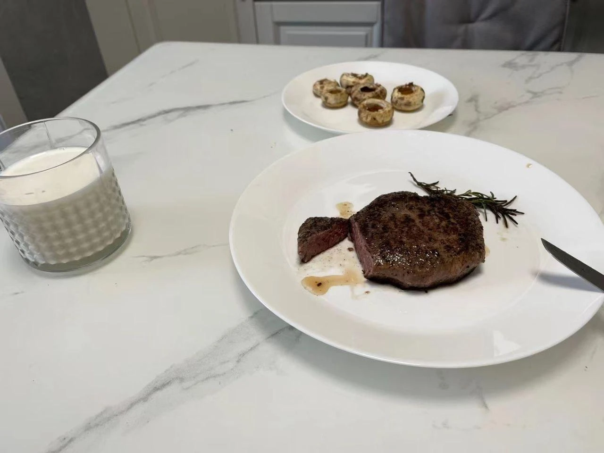

by chinggg
2021.12.12
你多久没有更新你的 Github Pages 博客了？
为什么 Typora 不开源还把 GitHub 作为阵地？
网盘？
Pull, Push
小猿搜题？
Search, Clone
每日一报自动机？
GitHub Actions
朋友圈动态
Follow, Star, Watch
多人联机游戏
开源 != 免费 != 白嫖
开源社区 != 上海大学开源社区
参与开源 != 必须提交代码
可量化地学习技术
先决条件
从兴趣出发，使用并探索开源软件
你知道自己电脑上都有哪些开源软件吗？
定个小目标，一天装好 Arch Linux（
结交同好，抱团取暖，组成 SIG
锁定目标，主动出击，在社区混脸熟
解决 Issue，交 Pull Request
在大厂实习能收获什么？
你实习大厂能收获什么？
怎样去大厂实习？
常见问题
211 本科够用了
大厂 996 不如 WFH 肉蛋奶 
谢谢观看，填个小问卷吧